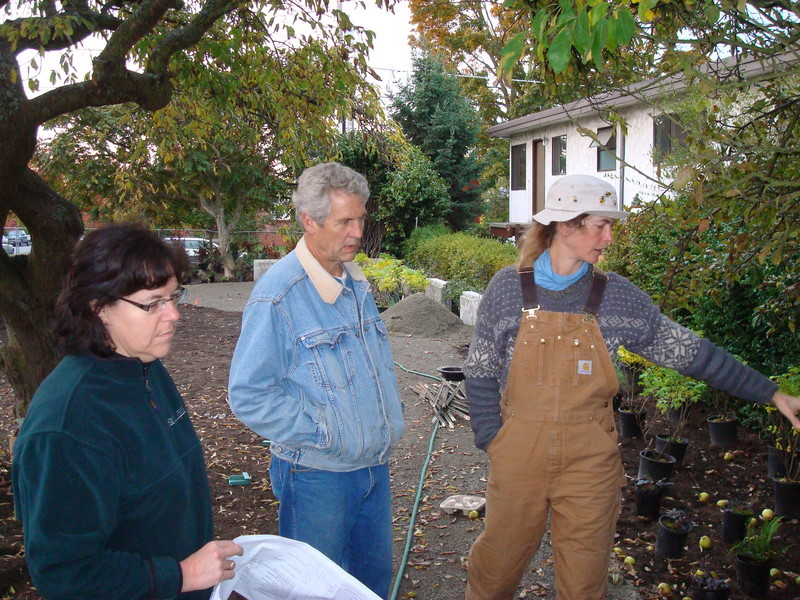
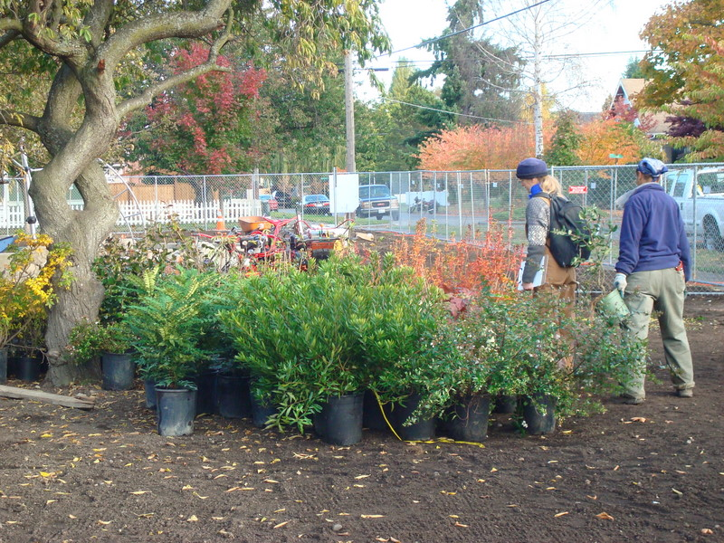
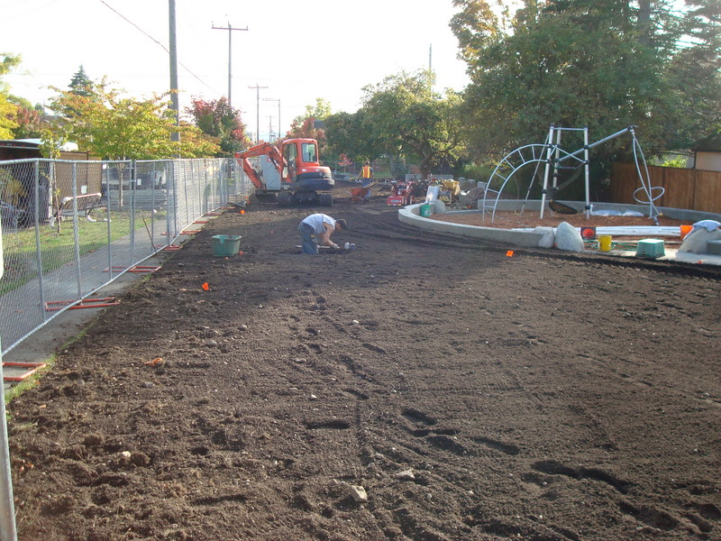
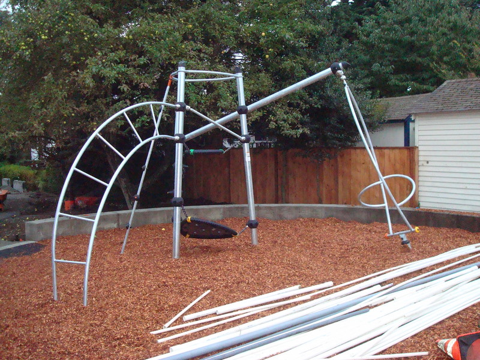
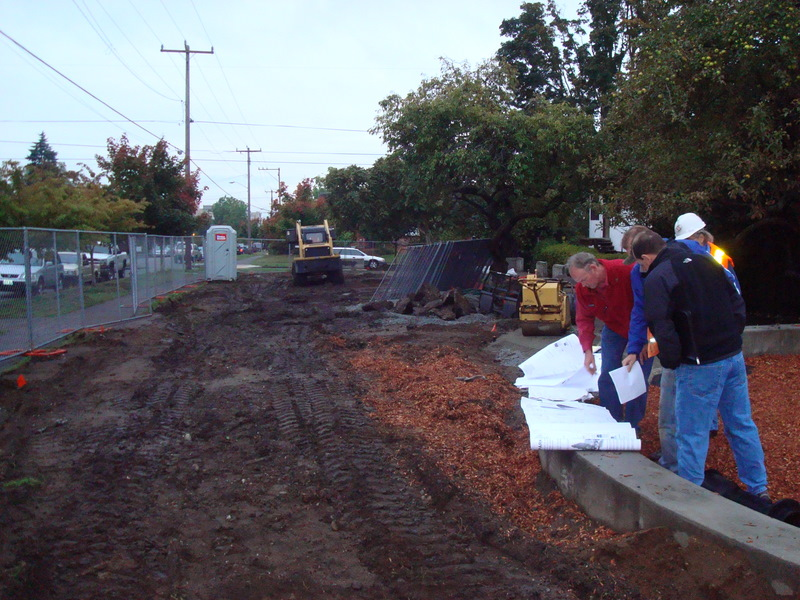
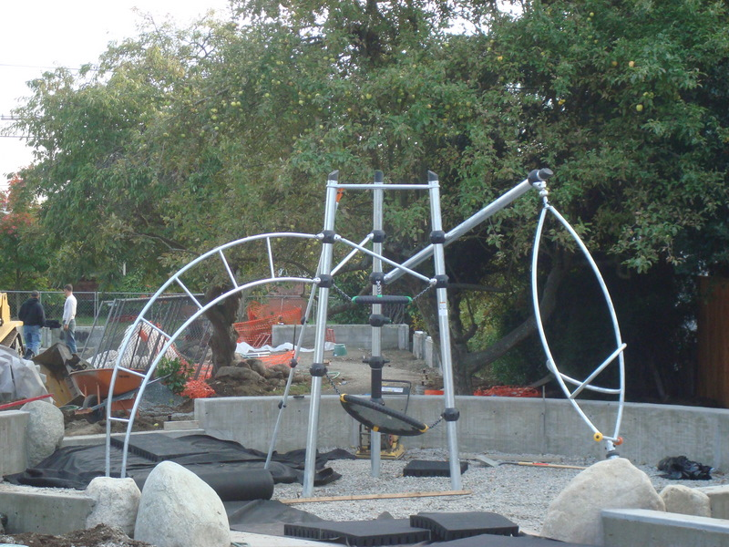
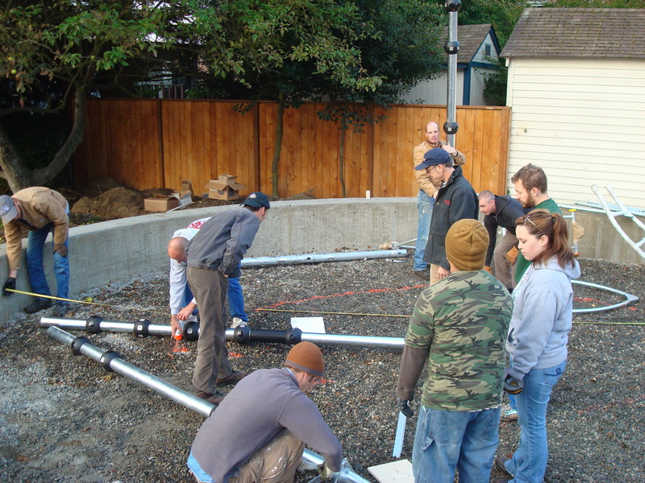
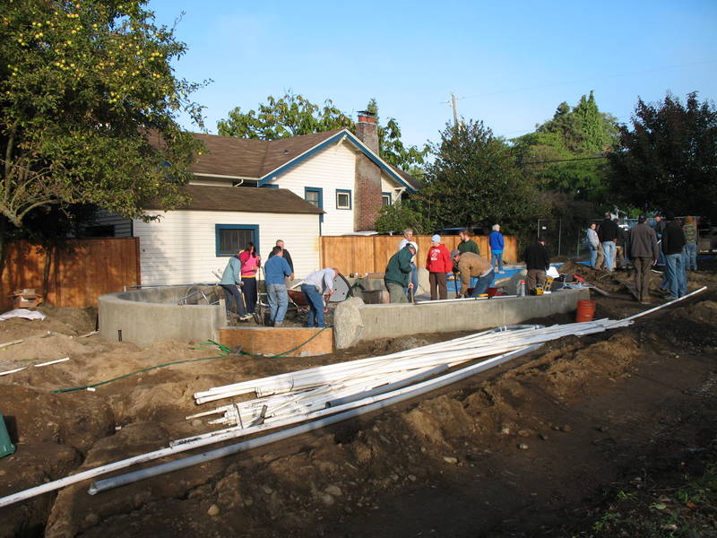
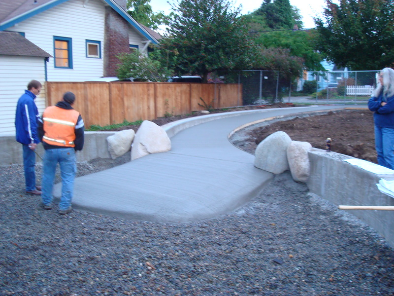

Today (Oct 25, 2008) we planted the “base bid” – the interior of the park. We had many volunteers; thanks to all of you that helped out.
Phoebe Fine, John Barker, and Gabriella Moller strategize about the planting.
(more…)
Posted on October 25th 2008 by David Folweiler in Events | Comments Off on Planting Party |
Phase 1 construction is nearly done. WS Contractors has done a great job of meeting the deadline, even if it did require them to crunch at the end. We met today to inspect the delivered plants and begin forming a punch list.
Gabriella and Adrian (from Parks) inspect plants.
(more…)
Posted on October 23rd 2008 by David Folweiler in Misc. | Comments Off on Substantial Completion Meeting |
When the construction has been “full tilt”, I’ve been going past the park nearly daily. Tuesday afternoon, I snapped some pictures.
This fellow, a WS Contractors employee, was knee deep in a hole. As it turns out, the poor fellow accidentally walked back into the hole while raking the topsoil. The fall didn't injure him. In the process, he busted the PVC plumbing which was full of water and he was soaked. The natural consequence was that he had to repair it.
(more…)
Posted on October 21st 2008 by David Folweiler in construction | Comments Off on Tuesday Check-In |
John Barker of Barker Landscape sent me these design documents for Phase 2:
Specifications
Cover Page
Layout
Planting Plan
TESC
Details L6
Irrigation
Grading
Details L7
Details L8
Details L9
Posted on October 20th 2008 by David Folweiler in Misc. | Comments Off on Phase 2 Design Documents |
I have willingly attended the weekly construction meetings on Thursday mornings at 7:15. Am a glutton for punishment? Perhaps. Nonetheless, it gives me a chance to see the construction progress and photograph it for posterity.
It also gives me a chance to know all the players better and interact with them. I, as is my want in life, ask many questions. I was the sort of student who sat in way back of the most enormous classrooms (think 500 hundred students in my Freshman classes at the University of Massachusetts) and asked the most inquisitive questions during the periods of time I was awake. I irritated many of my fellow students. The ones I irritated the most were the ones who took copious, verbatim notes. My questions would interrupt the professors’ natural flow/monologue. I wanted a discourse and being the very curious person I am, I wanted answers to my questions and a deeper understanding of the subject. In the other warm moments when I was in the upper level of the warm classroom/lecture hall, I was sound asleep.
To the huge irritation of my colleagues, I would then pull all ‘A’s in the tests. They simultaneously revered/hated me.
Here and now, I publicly apologize to my fellow students who disliked/couldn’t stand my incessant questions.
play structure with wood chips
meeting attendees - Chris Jewell, Jeff Mumma, Jared Stevenson, and Virginia Hassinger
Posted on October 16th 2008 by David Folweiler in construction | Comments Off on Weekly Construction Meeting |
I installed the spinner today with Will Stevenson (the contractor) today. I also noticed a large pile of wood chips. Note that these are not ordinary wood chips. They have been processed to minimize the possibility of splinters. I suspect they use a tumbler. They will go into the play area. Also notice the rubber pads that Will will place on the south entrance/exit from the play area.
play structure with spinner
Posted on October 14th 2008 by David Folweiler in construction | Comments Off on Spinner and Engineered Wood Chips |
It’s so wonderful to see the community come together to raise the play structure!!! I was thrilled to see the community participation. We had approximately 20 adults and several kids show up to help raise the play structure. It was really hard work (I, for one, am very sore today), but I was so proud of all the volunteers! Thanks so much!!
So many people deserve so much credit. I had a very limited perspective on what happened. I was concentrated on completing the task, so I delegated as much as possible. If I don’t/didn’t give you proper credit where credit was due, let me thank you publicly. Thank you!!!
A few folks went beyond the call of duty, including the dusty, dirty concrete mixing crew: Morgan Hougland, Scott Drage, and Devin Kitchel. They mixed 80 60-pound bags of concrete mix (that’s 4800 pounds of mix plus 4 pounds of water per bag – some 5120 pounds-nearly three tons-of wet concrete altogether!). Brent Bottles started earlier, worked harder, recruited more volunteers, and stayed longer than anyone else – strong work, Brent – thank you very much. John Barker and Jeff Mumma of Barker Landscape Architects (our park designer) came and volunteered their efforts off the clock. I made a very spontaneous decision early on to assign Pete Pitcher to being in charge of assembling the structure (probably because he was wearing a construction jacket and appeared to have leadership and communication skills); this proved to be a wise choice – thanks, Pete. There was the lunch and feeding crew, Danika Waddell, Rebecca Carr, and my wife Molly Roston. And last, but now least, thanks to Gordon, who came back from a business trip to Korea a day early (and set up this blog and website where I am now posting).

(more…)
Posted on October 12th 2008 by David Folweiler in construction,Events | Comments Off on Installing the Play Structure!!! |
Davidya Kasperzyk has been an inspiration to the development of Ballard Corners Park. He, along with others in Groundswell NW, first imagined a park on this site. We owe him a debt of huge debt of gratitude. The next day, as we were headed out to the Ballard Farmers’ Market, he handed me a CD. Here are his pictures on 11 Oct 08 of the playground install:

(more…)
Posted on October 12th 2008 by David Folweiler in construction,Events | Comments Off on Play Structure Install – Davidya’s Pictures |

In a large volunteer event today we assembled and concrete-set the main play structure for the park.
A crazy Kompan structure (an Algol Galaxy) constructed in Eastern Europe, shipped from Tacoma and temporarily stored in David’s garage the toy is *looking good*.
Drive buy to see more – but no playing for a while until the park is finished!
And talking of finishing… we still need funds for phase 2 (the rain garden, entrance way and sitting area decoration) so please cash up, buy t-shirts, buy *our tiles* (post on this to come!) or just give.
See more photos at flickr – even if they are taken with a cameraphone!

Posted on October 11th 2008 by gordon in Misc. | Comments Off on Building Playtown!!! |
Here are a few photos documenting the construction progress. Â Will does his concrete pours over many days; here’s the latest.
Â
ramp into the play area
(more…)
Posted on October 9th 2008 by David Folweiler in construction | Comments Off on Concrete |
« Previous Page • Next Page »


{kind=link}
{kind=link}
{kind=link}
{kind=link}
{kind=link}
{kind=link}
{kind=link}
{kind=link}
{kind=link}
{kind=link}
{kind=link}